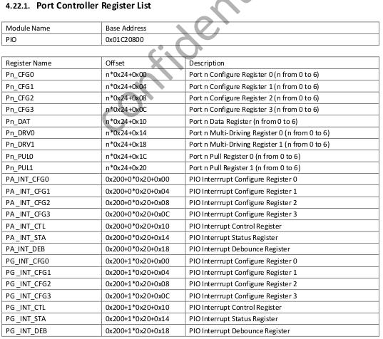
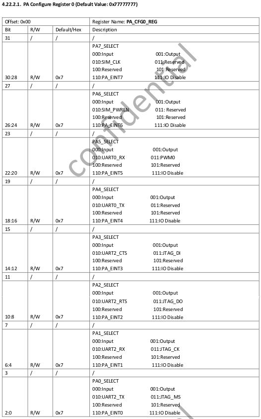
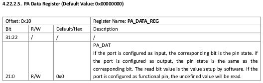
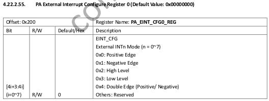
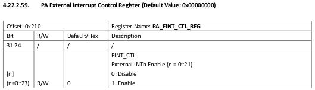
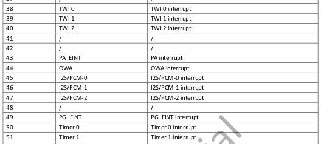

驱动程序的开发最终需要落实到硬件上。现代硬件的操作基本都是读写寄存器。而读写寄存器的方法基本都是IO映射，尤其是ARM平台。最近在Orange Pi上试验成功了驱动中GPIO的操作，尤其是，第一次在Linux响应了硬件中断，感觉大爽！
先直接上代码，然后再来解释。
h3_gpio.c
#include <linux/io.h>
#include <linux/fs.h>
#include <linux/init.h>
#include <linux/types.h>
#include <linux/errno.h>
#include <linux/sched.h>
#include <asm/uaccess.h>
#include <linux/module.h>
#include <linux/interrupt.h>
#include <linux/completion.h>
MODULE_LICENSE("Dual BSD/GPL");
#define DEV_MAJOR 224
#define DEV_NAME "h3_gpio"
// GPIO相关的寄存器的起始物理地址
#define GPIO_PHY_BASE 0x01C20800
// GPIO端口数目
#define GPIO_PORT_COUNT 7
// 要映射的长度
#define GPIO_PHY_LEN 0x300
// PA端口的中断号
#define PA_EINT_IRQ_NO 43
// PG端口的中断号
#define PG_EINT_IRQ_NO 49
// GPIO_PHY_BASE映射的虚拟地址
static uint8_t* base;
// 中断响应与write()之间通信用的完成量
static struct completion comp;
// 把指定端口的指定引脚设置为指定电平
// port: 端口， 'A'到'G'
// pin: 引脚， 0~31
// value: 0或1
// 成功返回0, 参数错误返回-EINVAL
static int set_pin_val(char port, unsigned pin, unsigned value)
{
if(!('A' <= port && port < 'A' + GPIO_PORT_COUNT) || pin >= 32 || value > 1)
return -EINVAL;
uint8_t* port_base = base + (port - 'A') * 0x24;
uint32_t* cfg_reg = (uint32_t*)(port_base + (pin / 8) * 4);
unsigned cfg_shift = (pin % 8) * 4;
uint32_t* dat_reg = (uint32_t*)(port_base + 0x10);
// 设置为输出模式
(*cfg_reg) &= ~((uint32_t)0xf << cfg_shift);
(*cfg_reg) |= (uint32_t)0x1 << cfg_shift;
// 写入指定电平
if(value)
(*dat_reg) |= (uint32_t)0x1 << pin;
else
(*dat_reg) &= ~((uint32_t)0x1 << pin);
return 0;
}
// 获取指定端口的指定引脚的电平
// port: 端口， 'A'到'G'
// pin: 引脚， 0~31
// value: 存放电平的值的指针
// 成功返回0, 参数错误返回-EINVAL
static int get_pin_val(char port, unsigned pin, unsigned* value)
{
if(!('A' <= port && port < 'A' + GPIO_PORT_COUNT) || pin >= 32 || value == 0)
return -EINVAL;
uint8_t* port_base = base + (port - 'A') * 0x24;
uint32_t* cfg_reg = (uint32_t*)(port_base + (pin / 8) * 4);
unsigned cfg_shift = (pin % 8) * 4;
uint32_t* dat_reg = (uint32_t*)(port_base + 0x10);
// 设置为输入模式
(*cfg_reg) &= ~((uint32_t)0xf << cfg_shift);
// 读取电平
(*value) = ((*dat_reg) >> pin) & (uint32_t)0x1;
return 0;
}
// 关闭所有GPIO中断
static void disable_pin_irq(void)
{
// PA的中断使能寄存器
uint32_t* eint_en_reg = (uint32_t*)(base + 0x200 + 0x10);
(*eint_en_reg) = 0;
// PG的中断使能寄存器
eint_en_reg = (uint32_t*)(base + 0x220 + 0x10);
(*eint_en_reg) = 0;
}
// 开启指定端口的指定引脚的GPIO中断，当其值跳变至value时触发
static int enable_pin_irq(char port, unsigned pin, unsigned value)
{
uint8_t* port_base;
if(port == 'A')
port_base = base + 0x200;
else if(port == 'G')
port_base = base + 0x220;
else
return -EINVAL;
if(pin >= 32 || value > 1)
return -EINVAL;
uint32_t* eint_cfg_reg = (uint32_t*)(port_base + (pin / 8) * 4);
unsigned eint_cfg_shift = (pin % 8) * 4;
uint32_t* eint_en_reg = (uint32_t*)(port_base + 0x10);
port_base = base + (port - 'A') * 0x24;
uint32_t* cfg_reg = (uint32_t*)(port_base + (pin / 8) * 4);
unsigned cfg_shift = (pin % 8) * 4;
// 设置为中断模式
(*cfg_reg) &= ~((uint32_t)0xf << cfg_shift);
(*cfg_reg) |= (uint32_t)0x6 << cfg_shift;
// 设置中断触发方式（上升沿还是下降沿）
(*eint_cfg_reg) &= ~((uint32_t)0xf << eint_cfg_shift);
if(!value)
(*eint_cfg_reg) |= (uint32_t)0x1 << eint_cfg_shift;
// 使能该引脚的中断
(*eint_en_reg) |= (uint32_t)0x1 << pin;
return 0;
}
// 中断例程
static irqreturn_t on_pin_irq(int irq, void* dev_id)
{
// 关闭中断
disable_pin_irq();
// 唤醒完成量
complete_all(&comp);
return IRQ_NONE;
}
static ssize_t write(struct file* file, const char* buf, size_t len, loff_t* offset)
{
if(len > 64)
return -EINVAL;
char kbuf[len];
copy_from_user(kbuf, buf, len);
// 如果写入形如“set A7=1”这样的命令，则设置相应引脚的电位
if(strncmp(kbuf, "set ", 4) == 0)
{
char port;
unsigned pin, value;
if(sscanf(kbuf + 4, "%c%u=%u", &port, &pin, &value) != 3)
return -EINVAL;
int ret = set_pin_val(port, pin, value);
return ret == 0 ? len : ret;
}
// 如果写入形如“wait A10=1”这样的命令，那么阻塞，直至相应的引脚的电位变为指定值
else if(strncmp(buf, "wait ", 5) == 0)
{
char port;
unsigned pin, value;
if(sscanf(kbuf + 5, "%c%u=%u", &port, &pin, &value) != 3)
return -EINVAL;
while(1)
{
unsigned val;
int ret;
// 获取电位
if((ret = get_pin_val(port, pin, &val)) != 0)
return ret;
// 如果变为预期值，则成功返回
if(val == value)
return len;
// 如果不是，那么开启中断，进行监听
if((ret = enable_pin_irq(port, pin, value)) != 0)
return ret;
// 等到被中断唤醒（如果被打断，则返回）
if(wait_for_completion_interruptible(&comp))
return len;
}
}
return -EINVAL;
}
static struct file_operations fops=
{
.owner = THIS_MODULE,
.write = write,
};
static int dev_constructor(void)
{
int ret = register_chrdev(DEV_MAJOR, DEV_NAME, &fops);
if(ret < 0)
{
printk("<%s> fail to register, errno = %d\n", DEV_NAME, ret);
return ret;
}
// IO映射
base = ioremap(GPIO_PHY_BASE, GPIO_PHY_LEN);
if(base == 0)
{
printk("<%s> fail to ioremap()", DEV_NAME);
return -EIO;
}
// 申请PA中断，共享中断，由on_pin_irq()响应
ret = request_irq(PA_EINT_IRQ_NO, on_pin_irq, IRQF_SHARED, DEV_NAME, &base);
if(ret < 0)
{
printk("<%s> fail to request_irq(PA_EINT_IRQ_NO = %u), errno = %d\n", DEV_NAME, PA_EINT_IRQ_NO, ret);
return ret;
}
// 申请PG中断，共享中断，由on_pin_irq()响应
ret = request_irq(PG_EINT_IRQ_NO, on_pin_irq, IRQF_SHARED, DEV_NAME, &base);
if(ret < 0)
{
printk("<%s> fail to request_irq(PA_EINT_IRQ_NO = %u), errno = %d\n", DEV_NAME, PG_EINT_IRQ_NO, ret);
return ret;
}
// 初始化完成量
init_completion(&comp);
return 0;
}
static void dev_destructor(void)
{
unregister_chrdev(DEV_MAJOR, DEV_NAME);
iounmap(base);
free_irq(PA_EINT_IRQ_NO, &base);
free_irq(PG_EINT_IRQ_NO, &base);
}
module_init(dev_constructor);
module_exit(dev_destructor);
首先讲一下这个驱动程序要做什么吧。其实就是两方面的功能：
- 向设备写入“set <port><pin>=<value>”，则把指定引脚设为指定电平输出（比如写入“set A10=1”，那么PA10引脚就会输出高电平）；
- 向设备写入“wait <port><pin>=<value>”，则进程会阻塞，直到指定引脚的电平输入变成指定值（比如写入“wait A7=0”，那么当且仅当PA7读到0时才返回）。
那么首先肯定要实现对指定的引脚进行读写的功能。看一下Allwinner_H3_Datasheet_V1.2.pdf的316页开始就是介绍GPIO寄存器了：

所以，第一步就是在初始化驱动程序时，进行IO映射：
base = ioremap(GPIO_PHY_BASE, GPIO_PHY_LEN);
这样base就指向了物理地址GPIO_PHY_BASE，也就是0x01C20800。接下来，就是要看引脚具体要如何操作。每个端口有4个CFG寄存器，以PA为例，其PA_CFG0寄存器描述如下：

也就是说，Pn的Pin0~Pin7归Pn_CFG0管理，Pin8~Pin15归Pn_CFG1管理，Pin16~Pin23归Pn_CFG2管理，Pin24~Pin31归Pn_CFG4管理。每一个Pin占用4位，表示其工作模式。所以要把某个引脚设置为输出模式，就要先找到其所在的Pn_CFGx寄存器，以及在寄存器中的哪4位，然后把这4位改为0001。设为输出模式后，输出的值是通过Pn_DAT设置的，还是以PA_DAT为例，其描述如下：

也就是说，第i位就是PAi的值。那么设置引脚输出电平的函数就呼之欲出了：
// 把指定端口的指定引脚设置为指定电平
// port: 端口， 'A'到'G'
// pin: 引脚， 0~31
// value: 0或1
// 成功返回0, 参数错误返回-EINVAL
static int set_pin_val(char port, unsigned pin, unsigned value)
{
// 检验参数合法性
if(!('A' <= port && port < 'A' + GPIO_PORT_COUNT) || pin >= 32 || value > 1)
return -EINVAL;
// Pn寄存器组的基地址
uint8_t* port_base = base + (port - 'A') * 0x24;
// Pn_CFGx寄存器
uint32_t* cfg_reg = (uint32_t*)(port_base + (pin / 8) * 4);
// 在Pn_CFGx寄存器中的偏移量
unsigned cfg_shift = (pin % 8) * 4;
// Pn_DAT寄存器
uint32_t* dat_reg = (uint32_t*)(port_base + 0x10);
// 设置为输出模式，即把对应的4位设置为0001
(*cfg_reg) &= ~((uint32_t)0xf << cfg_shift);
(*cfg_reg) |= (uint32_t)0x1 << cfg_shift;
// 写入指定电平
if(value)
(*dat_reg) |= (uint32_t)0x1 << pin;
else
(*dat_reg) &= ~((uint32_t)0x1 << pin);
return 0;
}
那么读取电平的函数也是一样的，唯一的区别仅仅是Pn_CFGx中对应的4位设置为0000，然后读取Pn_DAT，那就不再贴一遍了~
接下来重点是使能GPIO中断，三步走：将引脚配置为中断模式，设置中断触发方式，设置使能寄存器以允许中断。引脚模式的配置依旧在Pn_CFGx寄存器中，从上上图中可以看到中断模式是把对应的4位设置为0110。注意了，只有PA和PG可以中断！在Allwinner_H3_Datasheet_V1.2.pdf的340页末尾有PA_INT_CFGx寄存器的介绍：

再结合下面几个寄存器，就可以知道，其形式和Pn_CFGx很像，用4位管理一个引脚的中断触发模式。最后就是允许中断：

所以开启某个引脚上的中断的代码就出来了：
// 开启指定端口的指定引脚的GPIO中断，当其值跳变至value时触发
static int enable_pin_irq(char port, unsigned pin, unsigned value)
{
uint8_t* port_base;
if(port == 'A')
port_base = base + 0x200;
else if(port == 'G')
port_base = base + 0x220;
else
return -EINVAL;
if(pin >= 32 || value > 1)
return -EINVAL;
// Pn_INT_CFGx寄存器
uint32_t* eint_cfg_reg = (uint32_t*)(port_base + (pin / 8) * 4);
// Pn_INT_CFGx寄存器中的偏移量
unsigned eint_cfg_shift = (pin % 8) * 4;
// Pn_INT_CTL寄存器
uint32_t* eint_en_reg = (uint32_t*)(port_base + 0x10);
port_base = base + (port - 'A') * 0x24;
// Pn_CFGx寄存器
uint32_t* cfg_reg = (uint32_t*)(port_base + (pin / 8) * 4);
// Pn_CFGx寄存器中的偏移量
unsigned cfg_shift = (pin % 8) * 4;
// 设置为中断模式
(*cfg_reg) &= ~((uint32_t)0xf << cfg_shift);
(*cfg_reg) |= (uint32_t)0x6 << cfg_shift;
// 设置中断触发方式（上升沿还是下降沿）
(*eint_cfg_reg) &= ~((uint32_t)0xf << eint_cfg_shift);
if(!value)
(*eint_cfg_reg) |= (uint32_t)0x1 << eint_cfg_shift;
// 使能该引脚的中断
(*eint_en_reg) |= (uint32_t)0x1 << pin;
return 0;
}
那么Linux中如何注册中断响应例程呢？这是通过request_irq()函数实现的，原型如下：
int request_irq(unsigned int irq,
irq_handler_t handler,
unsigned long flags,
const char *devname,
void *dev_id);
第一个参数irq是中断号。一般而言，中断号是一个确定的常数，取决于硬件。irq_handler_t是一个函数指针，要求函数有这样的原型：
irqreturn_t irq_handler(int irq, void* dev_id);
当中断触发时，该函数就被kernel调用，传入的irq就是中断号，dev_id就是request_irq()的最后一个参数，用作用户自定义数据。该函数的返回值要么是IRQ_NONE，要么是IRQ_HANDLED。IRQ_NONE表示该中断并不是此中断例程关注的，而IRQ_HANDLED则表示该中断确实是此中断例程关注的，且已被处理。第三个参数flags最重要的取值是IRQF_SHARED，表示与其他例程共享中断号，如果不设置，则表示独占中断号（但可能已被占用）。第四个参数devname就是一个名称，会在/proc/interrupts下显示出来。
最后一个参数dev_id要重点说。一方面，它可以作为用户自定义数据。但对于kernel来说，它最重要的作用是在释放中断例程时唯一确定需要释放哪一个例程。对于flag为IRQF_SHARED的共享中断，多个中断响应例程会以链表的形式相连，中断触发时依次被调用。释放函数如下：
void free_irq(unsigned int irq, void *dev_id);
对于共享中断，只有irq和dev_id共同才能确定该释放的是哪一个例程。所以dev_id得唯一。
本例中，通过
request_irq(PA_EINT_IRQ_NO, on_pin_irq, IRQF_SHARED, DEV_NAME, &base); request_irq(PG_EINT_IRQ_NO, on_pin_irq, IRQF_SHARED, DEV_NAME, &base);
让PA和PG的中断都由on_pin_irq来响应。这里补充说明：大多数芯片上，一个GPIO端口的所有引脚共享一条中断线。那么怎么知道PA和PG的中断号是多少呢？这个在Allwinner_H3_Datasheet_V1.2.pdf的206页上开始的Interrupt Source表：

可见PA和PG的中断号分别是43和49。
至此，中断也能注册，也能随时使能了，那么就是用户命令如何与中断关联了。我的逻辑是这样的：
- 用户写入“wait <port><pin>=<value>”；
- 读取<port><pin>的电平，如果是<value>，则成功返回；
- 使能<port><pin>上的中断，如果<value>=0则下降沿触发，否则上升沿触发；
- 等待完成量，阻塞；
- 跳至步骤2。
而中断中，则关闭所有GPIO中断，然后触发完成量。
至此，所有的原理都讲完了吧~